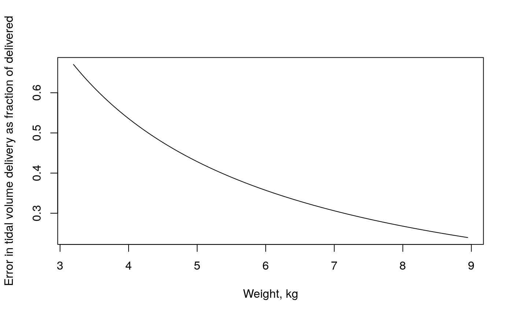

NeonatalVentilation.RmdFully extending the primary concertina tubing of a breathing circuit increases compliance: the rigidity of the tubing itself falls, and there is more air in it. The following chart shows the effect of this difference on deadspace fraction in neonatal ventilation. This shows why a compliance test is essential before a neonatal anesthesia case, and why the tubing should not be extended or contracted after this test.
library(physiology)
library(childsds)
library(dplyr)
library(magrittr)
# units of ml per cmH20
min_compliance <- 0.5
max_compliance <- 1.5
# unit cmH20
driving_pressure <- 15
insp_tube_vol_diff <- driving_pressure * (max_compliance - min_compliance)Get median female weight for age up to one year. (See also this comparison of growth calculator.)
dat <- as_tibble(
childsds::make_percentile_tab(
childsds::who.ref,
item = "weight",
perc = 50,
stack = TRUE,
sex = "sex"))
dat <- dplyr::filter(dat, sex == "female", age <= 1) %>%
dplyr::rename(weight = value) %>%
dplyr::select(age, weight)The following plot shows the fractional error in tidal volume delivery in small patients. The error is based on a machine check with fully collapsed tubing, and ventilation with fully extended tubing.
dat <- dat %>%
mutate(tidal_volume = 7 * weight) %>%
mutate(error_fraction = insp_tube_vol_diff / tidal_volume)
plot(dat[c("weight", "error_fraction")],
type = "l",
xlab = "Weight, kg",
ylab = "Error in tidal volume delivery as fraction of delivered")
The volume of breathing circuit equipment is more important the smaller the patient. E.g., for a cleft palate repair in an infant, a flexible extension is often used, in addition to a (hopefully) pediatric in-line humidifier. Let’s calculate the volume of this apparatus:
cleft_repair_deadspace <-
deadspace_equipment_ml(humidifier = "infant",
elbow = FALSE,
flexible = "extended")
cleft_repair_deadspace2 <-
deadspace_equipment_ml(humidifier = "infant",
elbow = FALSE,
flexible = "none")Now we see the great relative proportion of all this optional equipment even in older infants. In these plots, the predicted ideal weight for age is used to calculate a tidal volume. The typical setup is with the flexible tubing extended and a pediatric humidifier. The somewhat better setup is with just the pediatric humidifier. No elbow was included.
dat$equip_err_frac <- cleft_repair_deadspace / dat$tidal_volume
dat$equip_err_frac2 <- cleft_repair_deadspace2 / dat$tidal_volume
dat$months <- dat$age * 12
plot(dat$months, dat$equip_err_frac,
axes = FALSE,
type = "l",
ylim = c(0, 2),
main = "Effect of optional equipment deadspace in infants",
sub = "Age, months (top axis), Weight, kg (bottom axis)",
xlab = "",
ylab = "Equipment deadspace as fraction of expected tidal volume")
axis(2, seq(0, 2, 0.5))
axis(1, at = 0:12, line = 0)
lines(dat$months, dat$equip_err_frac2, lty = 2)
wts <- seq(floor(min(dat$weight)), ceiling(max(dat$weight)))
points(dat$months, rep_len(0, length(dat$months)), type = "n")
axis(1, at = seq(0, 12, 12/6), labels = wts, line = 2)
legend("topright", c("typical", "better"), lty = c(1, 2))